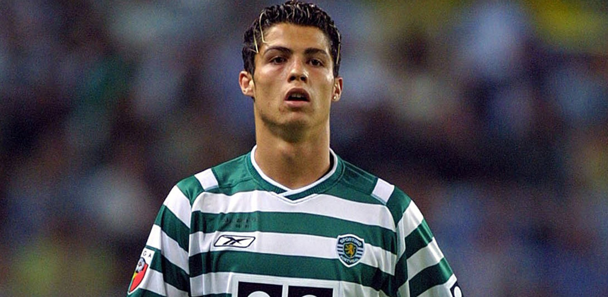
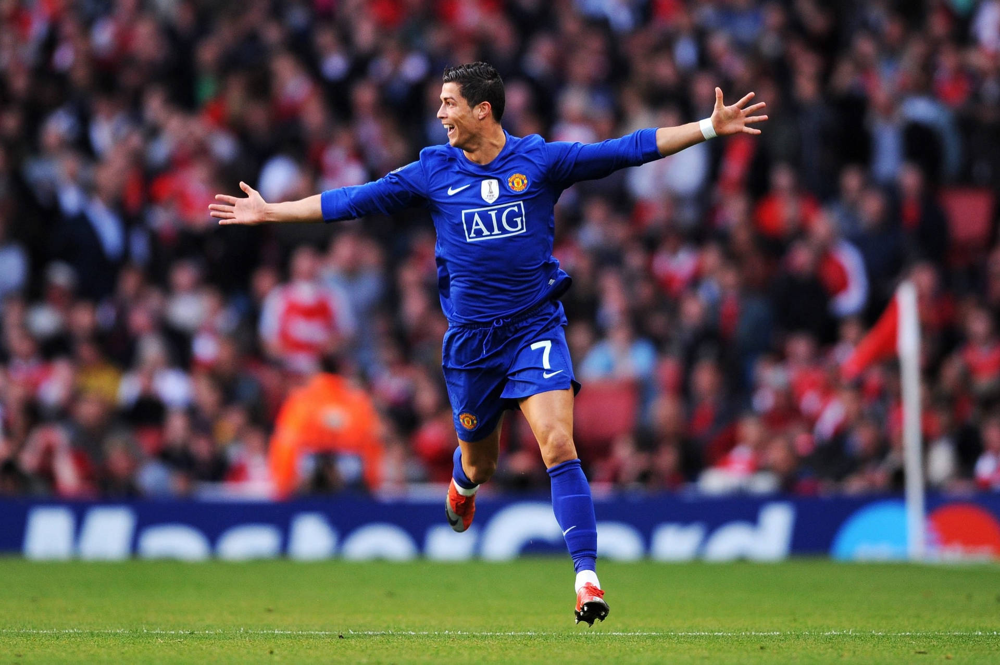
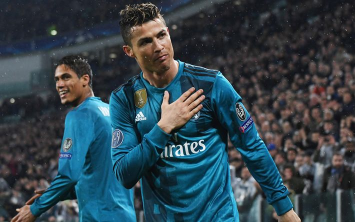
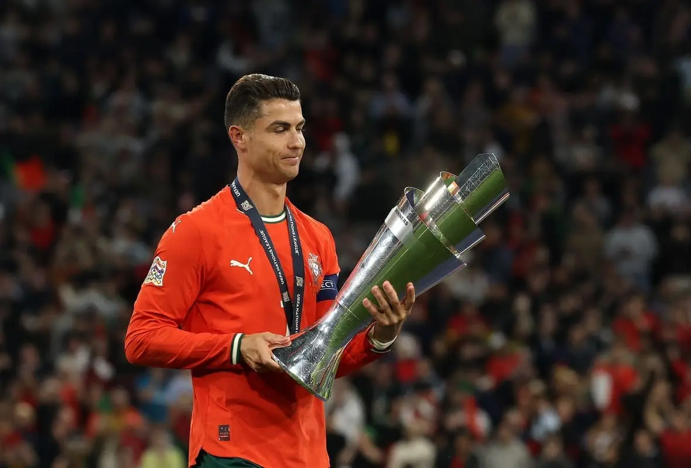

Survole une image pour afficher un moment clé de sa carrière.
Né à Madère en 1985, Cristiano Ronaldo est repéré très jeune pour sa vitesse,
sa détermination et une technique hors du commun. Dès l’adolescence, il impressionne
au Sporting CP, où son talent attire rapidement l’attention des plus grands clubs européens.
À Manchester United, il évolue sous les ordres de Sir Alex Ferguson et se transforme en superstar mondiale.
Il remporte plusieurs titres, perfectionne son style de jeu et décroche en 2008 son premier Ballon d’Or,
confirmant son ascension fulgurante.
Au Real Madrid, il atteint une dimension historique : il inscrit plus de buts que de matchs joués,
bat une multitude de records, remporte quatre Ligues des Champions et devient l’un des plus grands
joueurs de l’histoire du club. Son passage à Madrid marque l’âge d’or de sa carrière.
Avec le Portugal, il devient le pilier de la sélection. En 2016, il remporte l’Euro,
un moment historique pour son pays, puis devient le meilleur buteur de l’histoire des équipes
nationales. Sa longévité et son leadership en font une icône mondiale.